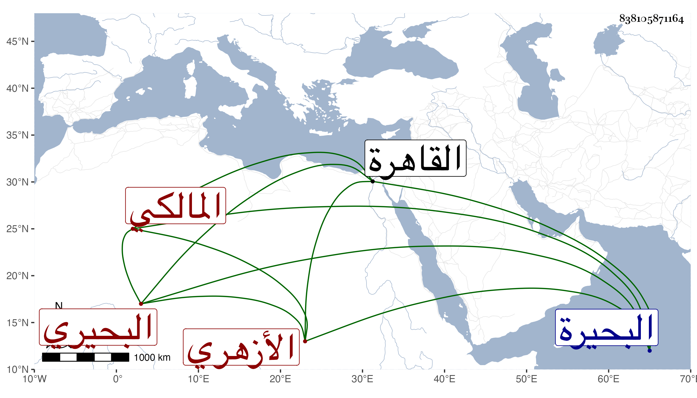

0902Sakhawi.DawLamic.ITO20230111-ara1.EIS1600.838105871164
Biography ID: 838105871164
120
علي بن موسى بن جلال بن أحمد بن جلال بن أحمد نور الدين البحيري الأزهري المالكي . ولد في سنة إحدى وخمسين وثمانمائة بالبحيرة ونشأ فحفظ بالقاهرة القرآن والمختصر في فروعهم وألفية ابن ملك والتلخيص وجمع الجوامع في الأصول وغيرها وأخذ عن البرهان اللقاني في الفقه وكذا عن السنهوري وربما أخذ عنه غيره ولم يكن الشيخ يحمده بل ربما يطرده حتى أنه أبطل تقسيما كان اشترك مع البدر بن المحب والشهاب الفيشي فيه لأجله وقرأ على التقي الحصني في شرح العقائد وسمع دروسه وبعض دروس الكمال بن أبي الشريف وأقامه من مجلسه وتردد للمحب بن الشحنة في شرح ألفية العراقي وكانت تبلغني عنه مضحكات أو مبكيات ولزم صحبة ولده الصغير وأشباهه وأكثر من الجلوس عند الخيضري وتغرى بردى القادري ثم برسباي قرار قيل أنه كان يقرأ عليه وسمع اتفاقا على الشاوي وحفيد يوسف العجمي وذكر بجودة الخط وكثرة الإقدام والاستعجال والاقتدار على التعبير مع كونه ليس في الفهم بذاك ولا أتقن علما ولكن قد راج بين العوام غالبا سيما حين مشاهدته في مجالس القاصرين ونقلت لي عنه كلمات حين حضوره مجلس شيخه الخيضري يستحق فيها الأدب بل أزيد وربما تألم السنهوري حين يحكي له بعضها وقبحه السلطان في جماعة المؤيدية بل رام ضربه ووصفه بالفجور وحلف الخطيب الوزيري بالطلاق الثلاث أنه لا يتكلم معه في علم هذا مع تماثلهما في كثير من الأوصاف وأهانه الإمام الكركي لمخاطبته للزيني زكريا قبل قضائه في مجلس القلعة بما لا يليق جريا على عادته بحيث فعل مثل ذلك مع قاضي الحنفية الأمشاطي في مجلس بجامع الأزهر ورام القيام من المجلس فتلطفوا به وحج سنة خمس وتسعين منتميا للشريف إسحق صهر الخواجا ابن قاوان وجاور وتزوج هناك وأقرأ قليلا ثم عاد معه في موسم سنة سبع وتسعين وبالجملة فلم يتهذب بمرشد ولا تأدب بمسعد .
